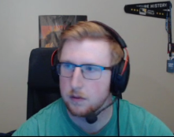

About Me
My name is Evan Cameron, I also go by EvnEssnce online. I work as a Production Manager for Elo Hell Esports, an online broadcasting corporation responsible for the production of events such as Overwatch Contenders China 2020 and The Trial of Champions. When I'm not busy obsessing over video games and productions, I love to spend my free time playing volleyball, building computers, practicing martial arts
One significant thing about me that not many people know is that I only have one working lung. I was born with a CDH which prevented the correct growth and development of my left lung before I was born. Due to a surgery when I was very young they were able to correct the hole in my diaphragm and ensure that I would live unaffected by the condition.
List of Hobbies
- Video Gaming
- I've competed semi professionally in multiple esports including Overwatch, Team Fortress 2 and Teamfight Tactics.
- Martial Arts
- At the age of 14, I achieved the rank of 1st Dan, or 1st black belt in Tang Soo Do, a Korean form of martial arts.
I shoot for the moon, but I'm too busy gazing the stars
- Eminem